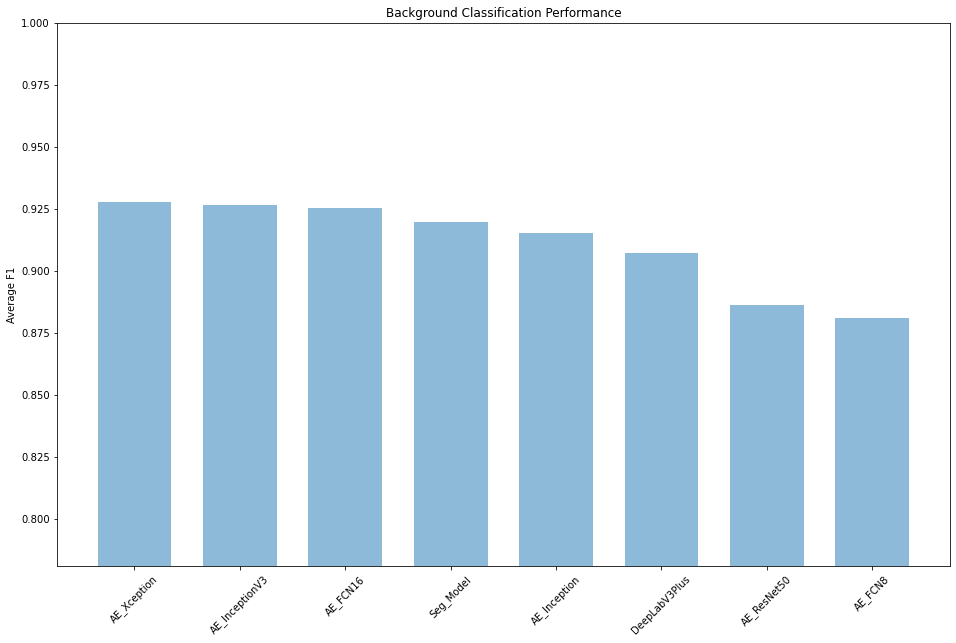
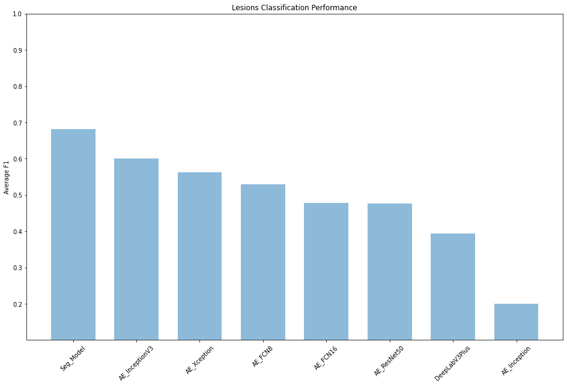

Overall Model Performance
Overall Model Performance¶
import pandas as pd
import numpy as np
import os
import matplotlib.pyplot as plt
from functools import reduce
data = pd.read_csv('L2 Data Scientist Assessment - Data.csv', dtype = str, encoding = 'cp1252')
data['f1'] = data['f1'].astype(float)
data['accuracy'] = data['accuracy'].astype(float)
background = data[data['class'] == 'Background']
tissue = data[data['class'] == 'Tissue']
lesions = data[data['class'] == 'Lesions']
tissue_absolute_best = tissue[['model','f1']].sort_values(by='f1',ascending=False).head(20)
lesions_absolute_best = lesions[['model','f1']].sort_values(by='f1',ascending=False).head(20)
tissue_models_mean = tissue.groupby('model').agg({'f1':'mean'}).reset_index()
background_models_mean = background.groupby('model').agg({'f1':'mean'}).reset_index()
lesions_models_mean = lesions.groupby('model').agg({'f1':'mean'}).reset_index()
def plot(objects,performance,title):
y_pos = np.arange(len(objects))
objects = [x for _,x in sorted(zip(performance,objects),reverse=True)]
performance = [x for x,_ in sorted(zip(performance,objects),reverse=True)]
plt.figure(figsize=(16, 10))
plt.bar(y_pos, performance, align='center', alpha=0.5, width=0.7)
plt.xticks(y_pos, objects)
plt.ylabel('Average F1')
plt.title(title)
plt.ylim([(min(performance) - 0.1), 1])
plt.xticks(rotation=45)
plt.show()
plot(list(background_models_mean['model']),list(background_models_mean['f1']),'Background Classification Performance')

plot(list(tissue_models_mean['model']),list(tissue_models_mean['f1']),'Tissue Classification Performance')

tissue_absolute_best
| model | f1 | |
|---|---|---|
| 784 | Seg_Model | 0.979781 |
| 373 | Seg_Model | 0.976506 |
| 787 | Seg_Model | 0.976038 |
| 778 | Seg_Model | 0.975923 |
| 196 | Seg_Model | 0.975733 |
| 772 | Seg_Model | 0.975628 |
| 226 | Seg_Model | 0.975467 |
| 634 | Seg_Model | 0.975064 |
| 424 | Seg_Model | 0.975007 |
| 319 | Seg_Model | 0.974966 |
| 496 | Seg_Model | 0.974925 |
| 220 | Seg_Model | 0.974784 |
| 493 | Seg_Model | 0.974640 |
| 436 | Seg_Model | 0.974571 |
| 766 | Seg_Model | 0.974521 |
| 760 | Seg_Model | 0.974300 |
| 640 | Seg_Model | 0.974263 |
| 430 | Seg_Model | 0.974232 |
| 25 | Seg_Model | 0.974228 |
| 490 | Seg_Model | 0.974136 |
lesions_absolute_best
| model | f1 | |
|---|---|---|
| 320 | Seg_Model | 0.778314 |
| 656 | Seg_Model | 0.775863 |
| 197 | Seg_Model | 0.774564 |
| 437 | Seg_Model | 0.771905 |
| 26 | Seg_Model | 0.771742 |
| 440 | Seg_Model | 0.769761 |
| 425 | Seg_Model | 0.766738 |
| 260 | Seg_Model | 0.766386 |
| 227 | Seg_Model | 0.765968 |
| 497 | Seg_Model | 0.765820 |
| 452 | Seg_Model | 0.763455 |
| 314 | Seg_Model | 0.763230 |
| 374 | Seg_Model | 0.761334 |
| 434 | Seg_Model | 0.758431 |
| 650 | Seg_Model | 0.758280 |
| 536 | Seg_Model | 0.757935 |
| 221 | Seg_Model | 0.757362 |
| 443 | Seg_Model | 0.756927 |
| 488 | Seg_Model | 0.755753 |
| 431 | Seg_Model | 0.755753 |
plot(list(lesions_models_mean['model']),list(lesions_models_mean['f1']),'Lesions Classification Performance')
